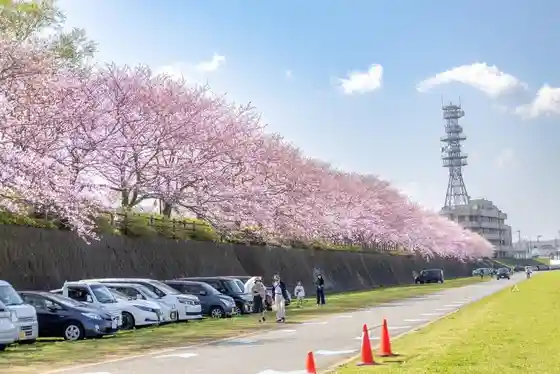
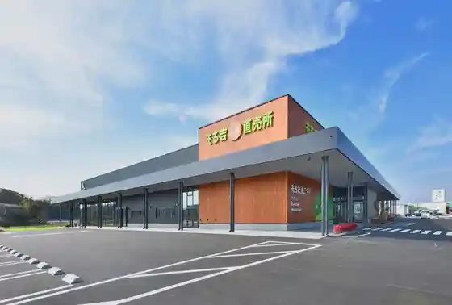
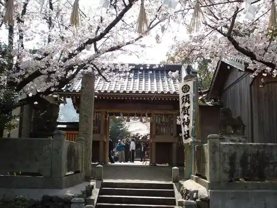
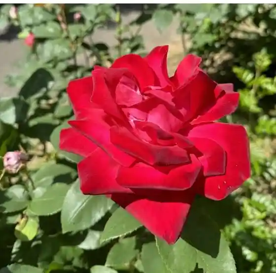
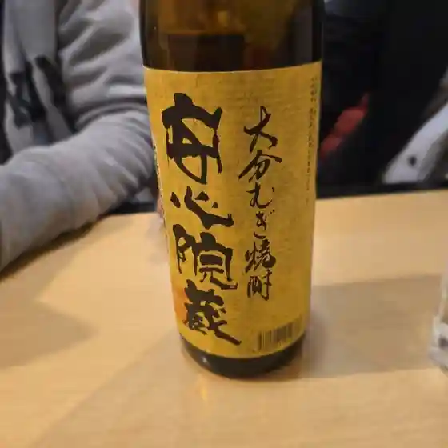
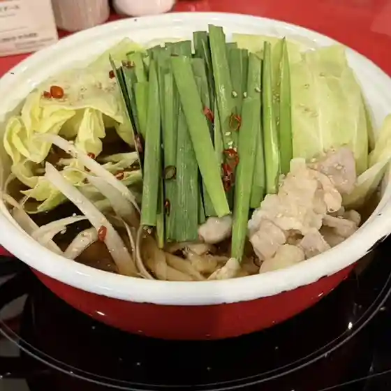
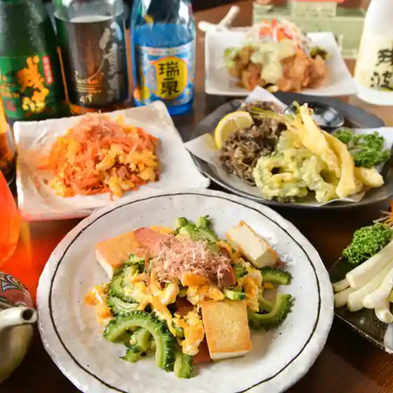
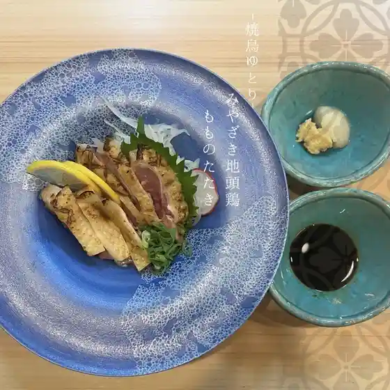
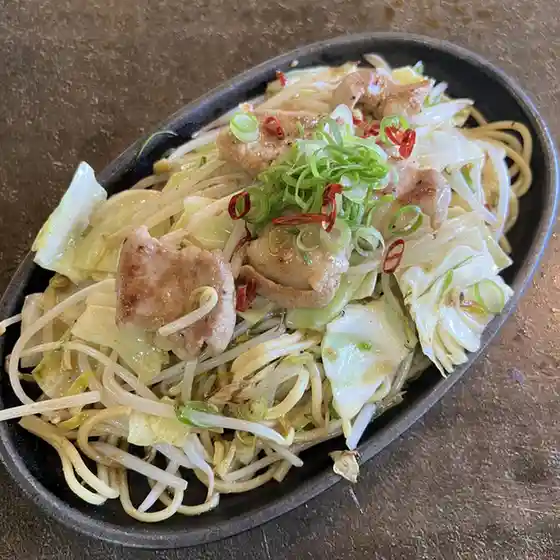

Nogata
Nogata · Fukuoka
Nogata
Highlighted on the Fukuoka map.
Sights
Nogata Gandabikkuri City
Nogata Ribasaido Park (Onga Kawa Kasenjiki Park)

Mochidango Village Mochi Kichi Kojo Chokubai Tokoro

Suga Shrine (Nogata)

Fukuchi Yama Roku Hana Park

Hakata Ya Kashi Ho
Nogata Sekitan Memorial Museum
Taga Shrine
Ryuo Kyo Kyanpu Village (Nogata)
Shinsen Shoku Plaza Na no Hana Hatake
Onga Kawamizu Hen Kan (Kanusukuru)
Tsurugi Shrine
Kyushu Reirueishoppu
Buruberiirabo Nogata
Mizu Town Iseki Park
Ei Man Tera Takuma Kamato
Nogata Oto Campground
Nogata Saiji Kan
Dining
や台ずし 直方駅前町
Ya Dai Zushi Noogataeki Maemachi

酒処 まるぜん
Sake Tokoro Maruzen

もつ鍋 むら井
Motsu Nabe Mura I

魚民 直方駅店
Uotami Noogataeki Mise

わらみん
Waramin

野菜巻串YUTORI
Yasai Kan Kushi Yutori

一時代
Ichijidai

BAR LUMEN
Bar Lumen

寿し清
Hisashi Shi Kiyoshi
焼き鳥 りん
Yakitori Rin
おにぎり カフェ Boo
Onigiri Kafe Boo
grace
Grace
母恵夢
Poemu
手打ち十割そば 健寿亭
Teuchi Chi Juu Wari Soba Kenji Tei
お好み焼き居酒屋 めぐちゃん
O Konomi Yaki Izakaya Meguchan
軍鶏屋 五鉄
Shamo Ya Go Tetsu
寿司保坂
Sushi Hosaka
中小企業大学校 食堂 直方校
Chuushoukigyou Daigakkou Shokudou Noogata Kou
からあげ屋
Karaage Ya
濱吉
Hamakichi
はなやん
Hanayan
タリーズコーヒー イオンモール直方店
Tariizukoohii Ionmooru Noogata Mise
あすなろ
Asunaro
割烹 はせ川
Kappou Hase Kawa
味楽
Aji Raku
筑前 しまや
Chikuzen Shimaya
Bar&Cafe An
Bar&Amp;Cafe An
口福堂 イオンモール直方店
Koufuku Dou Ionmooru Noogata Mise
久喜
Kuki
とうふ工房
Toufu Koubou
AZcafe Shidaka 福岡直方店
Azcafe Shidaka Fukuoka Noogata Mise
カネチョウマエダエン
Kanechoumaedaen
鉄板ハウス 丸ちゃん
Teppan Hausu Maru Chan
十割蕎麦 江
Juu Wari Soba Kou
松屋 直方PA上り線店
Matsuya Noogata Pa Nobori Sen Mise
ふじまき
Fujimaki
もととりあじさい園
Mototoriajisai Sono
ひろはし
Hirohashi
すしたか
Sushitaka
もち吉 名水工場
Mochi Kichi Meisui Koujou
那かむら イオンモール直方店
Na Kamura Ionmooru Noogata Mise
ラーメン・カフェ・ダイニング 温
Raamen・Kafe・Dainingu On
マクドナルド イオンモール直方店
Makudonarudo Ionmooru Noogata Mise
TOHOシネマズ 直方
Toho Shinemazu Noogata
ル・ミトロン食パン 直方店
Ru・Mitoron Shoku Pan Noogata Mise
THE.丼.DON
The . Donburi . Don
六庵cafe
Roku Iori Cafe
あごさん
Agosan
ニコニコ
Nikoniko
やき鳥信玄
Yaki Tori Shingen
兎舞夜
Usagi Mai Yoru
えくぼ屋 本店直売場
Ekubo Ya Honten Chokubai Ba
イシダファーム
Ishidafaamu
松寿司
Matsuzushi
石ちゃん
Ishi Chan
久遠チョコレート 直方店
Kudou Chokoreeto Noogata Mise
英ちゃんうどん
Ei Chan'Udon
こなやきっ廣 感田店
Konayakitsu Kou Kan Ta Mise
宇佐からあげ たかだ屋 直方びっくり市店
Usa Karaage Takada Ya Noogata Bikkuri Shi Mise
おかず屋 バイ リンガーハット イオンモール直方店
Okazu Ya Bai Ringaahatto Ionmooru Noogata Mise
Tanukian Nogata Fukuoka Prefecture Kyushu
Tanukian Nogata Fukuoka Prefecture Kyushu
Tanukian Nogata Fukuoka Prefecture Kyushu
Tanukian Nogata Fukuoka Prefecture Kyushu
Tanukian Nogata Fukuoka Prefecture Kyushu
Tanukian Nogata Fukuoka Prefecture Kyushu
Tanukian Nogata Fukuoka Prefecture Kyushu
Tanukian Nogata Fukuoka Prefecture Kyushu
Sennariya Nogata Fukuoka Prefecture Kyushu
Sennariya Nogata Fukuoka Prefecture Kyushu
Sennariya Nogata Fukuoka Prefecture Kyushu
Sennariya Nogata Fukuoka Prefecture Kyushu
Sennariya Nogata Fukuoka Prefecture Kyushu
Sennariya Nogata Fukuoka Prefecture Kyushu
Sennariya Nogata Fukuoka Prefecture Kyushu
Sennariya Nogata Fukuoka Prefecture Kyushu
French Restaurant Kineya Nogata Fukuoka Prefecture Kyushu
French Restaurant Kineya Nogata Fukuoka Prefecture Kyushu
French Restaurant Kineya Nogata Fukuoka Prefecture Kyushu
French Restaurant Kineya Nogata Fukuoka Prefecture Kyushu
French Restaurant Kineya Nogata Fukuoka Prefecture Kyushu
French Restaurant Kineya Nogata Fukuoka Prefecture Kyushu
French Restaurant Kineya Nogata Fukuoka Prefecture Kyushu
French Restaurant Kineya Nogata Fukuoka Prefecture Kyushu
Chef s Buffet Aeon Mall Naokata Nogata Fukuoka Prefecture Kyushu
Chef s Buffet Aeon Mall Naokata Nogata Fukuoka Prefecture Kyushu
Chef s Buffet Aeon Mall Naokata Nogata Fukuoka Prefecture Kyushu
Chef s Buffet Aeon Mall Naokata Nogata Fukuoka Prefecture Kyushu
Chef s Buffet Aeon Mall Naokata Nogata Fukuoka Prefecture Kyushu
Chef s Buffet Aeon Mall Naokata Nogata Fukuoka Prefecture Kyushu
Chef s Buffet Aeon Mall Naokata Nogata Fukuoka Prefecture Kyushu
Chef s Buffet Aeon Mall Naokata Nogata Fukuoka Prefecture Kyushu
Marumado Nogata Fukuoka Prefecture Kyushu
Marumado Nogata Fukuoka Prefecture Kyushu
Marumado Nogata Fukuoka Prefecture Kyushu
Marumado Nogata Fukuoka Prefecture Kyushu
Marumado Nogata Fukuoka Prefecture Kyushu
Marumado Nogata Fukuoka Prefecture Kyushu
Sankyu Nogata Fukuoka Prefecture Kyushu
Sankyu Nogata Fukuoka Prefecture Kyushu
Sankyu Nogata Fukuoka Prefecture Kyushu
Sankyu Nogata Fukuoka Prefecture Kyushu
Sankyu Nogata Fukuoka Prefecture Kyushu
Sankyu Nogata Fukuoka Prefecture Kyushu
Sankyu Nogata Fukuoka Prefecture Kyushu
Sankyu Nogata Fukuoka Prefecture Kyushu
Yakitori Yuimaru Nogata Fukuoka Prefecture Kyushu
Yakitori Yuimaru Nogata Fukuoka Prefecture Kyushu
Yakitori Yuimaru Nogata Fukuoka Prefecture Kyushu
Yakitori Yuimaru Nogata Fukuoka Prefecture Kyushu
Yakitori Yuimaru Nogata Fukuoka Prefecture Kyushu
Yakitori Yuimaru Nogata Fukuoka Prefecture Kyushu
Yakitori Yuimaru Nogata Fukuoka Prefecture Kyushu
Yakitori Yuimaru Nogata Fukuoka Prefecture Kyushu
Yama no Sobaya Nogata Fukuoka Prefecture Kyushu
Yama no Sobaya Nogata Fukuoka Prefecture Kyushu
Yama no Sobaya Nogata Fukuoka Prefecture Kyushu
Yama no Sobaya Nogata Fukuoka Prefecture Kyushu
Yama no Sobaya Nogata Fukuoka Prefecture Kyushu
Yama no Sobaya Nogata Fukuoka Prefecture Kyushu
Shanghai Chang Nogata Fukuoka Prefecture Kyushu
Shanghai Chang Nogata Fukuoka Prefecture Kyushu
Shanghai Chang Nogata Fukuoka Prefecture Kyushu
Shanghai Chang Nogata Fukuoka Prefecture Kyushu
Shanghai Chang Nogata Fukuoka Prefecture Kyushu
Shanghai Chang Nogata Fukuoka Prefecture Kyushu
Shanghai Chang Nogata Fukuoka Prefecture Kyushu
Shanghai Chang Nogata Fukuoka Prefecture Kyushu
Omurice Tei Fukuoka Aeon Ogata Nogata Fukuoka Prefecture Kyushu
Omurice Tei Fukuoka Aeon Ogata Nogata Fukuoka Prefecture Kyushu
Omurice Tei Fukuoka Aeon Ogata Nogata Fukuoka Prefecture Kyushu
Omurice Tei Fukuoka Aeon Ogata Nogata Fukuoka Prefecture Kyushu
Omurice Tei Fukuoka Aeon Ogata Nogata Fukuoka Prefecture Kyushu
Omurice Tei Fukuoka Aeon Ogata Nogata Fukuoka Prefecture Kyushu
Omurice Tei Fukuoka Aeon Ogata Nogata Fukuoka Prefecture Kyushu
Omurice Tei Fukuoka Aeon Ogata Nogata Fukuoka Prefecture Kyushu
Restaurant Kawabatatei Nogata Fukuoka Prefecture Kyushu
Restaurant Kawabatatei Nogata Fukuoka Prefecture Kyushu
Restaurant Kawabatatei Nogata Fukuoka Prefecture Kyushu
Restaurant Kawabatatei Nogata Fukuoka Prefecture Kyushu
Stay
プラザホテル直方
Purazahoteru Noogata
HOTEL AZ 福岡直方店
Hotel Az Fukuoka Noogata Mise